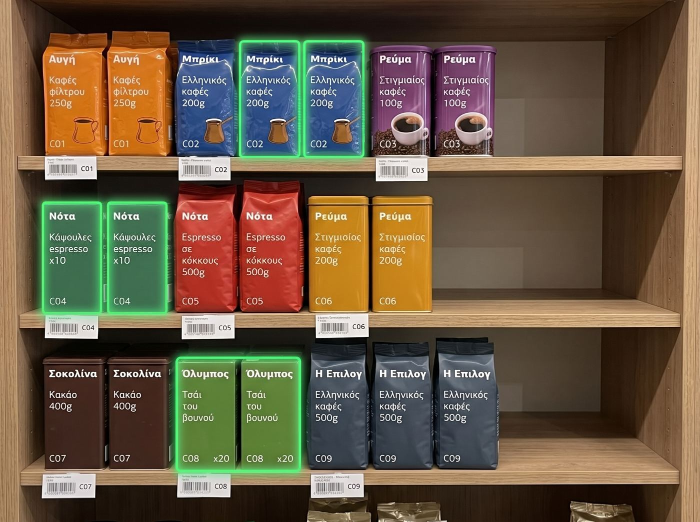

Point a phone at a supermarket shelf. Shelf-it finds the gaps, tells the shelf worker what to bring from the backroom, and orders what the store has run out of. Every number comes with its source.
Gen AI Summit Hackathon · Athens · Nov 2026 · Open Track

Illustration. Shelf image and brands are made up for the demo.
Every morning a department manager walks the aisles and checks the shelves by eye. Gaps are found late, the backroom has stock nobody brought out, and orders go in from memory.
of products are missing from the shelf at any given moment, on average.
of those sales are lost to the store. 31% of shoppers buy elsewhere, 9% buy nothing.
gaps are products the store already has, sitting in the backroom.
Source: Gruen, Corsten & Bharadwaj (2002), 52 studies across 29 countries.
One tap on the phone, or a live camera that sends a frame every second.
personGemini turns the photo into a table: shelf, position, product, facings, box.
modelCode compares it with the planogram: missing, short, or on the wrong shelf.
codeA task for the shelf worker, a Telegram alert, and an order to the warehouse.
codeWhen the camera sees the shelf fixed, the task closes by itself.
personOne agent, a handful of tools, and a hard line between what the model does and what code does.
/capture/camrules.jsontreg/tasks · TelegramfalEach gap becomes a task with a crop of the exact spot on the shelf, the number of units, and where to get them. Ranked by the sales the gap is losing, so the worst one comes first.
/tasks · TelegramA phone on the shelf streams one frame a second; the model checks it every few seconds.
/cam · GeminiUp to 3 cases or €50 it orders on its own. Anything bigger waits for a person to approve.
warehouse portal · approvalsSearches Greek trade and financial press. A claim is kept only if its quote appears word for word, with a date.
treg web & news searchWhen a layout change is accepted, it prints a small promotional sign for the shelf edge.
fal image generationA built-in offline model replays the whole flow, so the demo never depends on the venue Wi-Fi.
mock provider · replayEvery tool call and every figure is logged and shown next to the agent's work. Ask "where does this number come from?" and the answer is on screen.
console · audit logWhich suggestion comes out is decided by six rules from published retail research. Each one shows its rule, its number and its source. If a figure is missing, the rule does not run.
Daily sales × 0.40 lost
Gruen et al. 2002Backroom first, then order
Gruen et al. 2002Move one only if the gain beats the loss
Eisend 2014Best margin per facing at eye level
Drèze et al. 1994; Chandon et al. 2009Target product in the centre
Atalay et al. 2012Next to the category leader
Sayman et al. 2002Public data where it exists. Where only a retailer has the numbers, we made them up and say so. No data from any team member's employer was used.
Today: one phone, one aisle, a task list ready before the store opens.
Next: the same findings across every store, to see which planograms fail and where.
With real sales and costs plugged in, the same rules run on real margins.
Built in two days at the Gen AI Summit Hackathon, Athens. Before the event we prepared a generic
agent skeleton with no shelf logic; it is declared in the README and tagged boilerplate in the history.